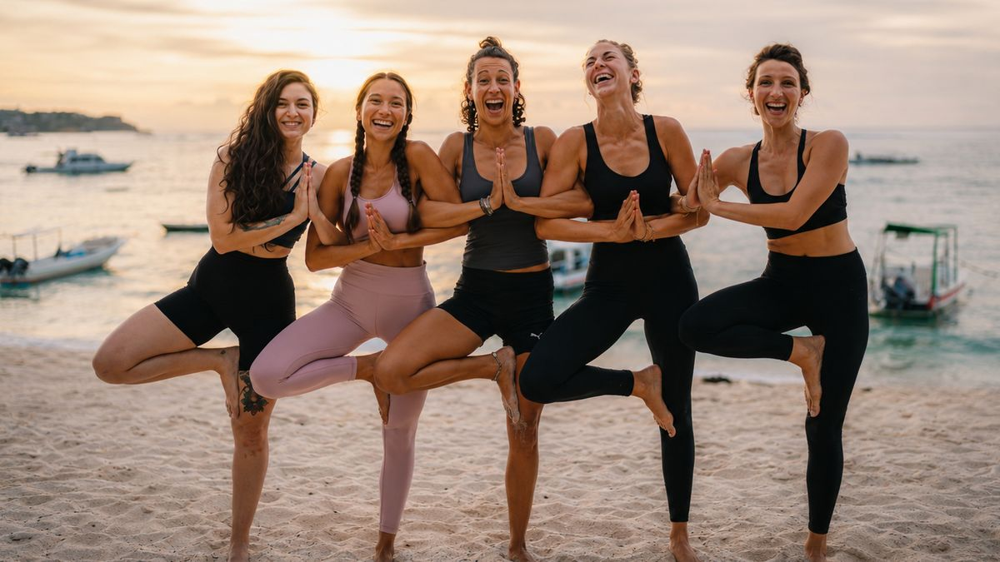
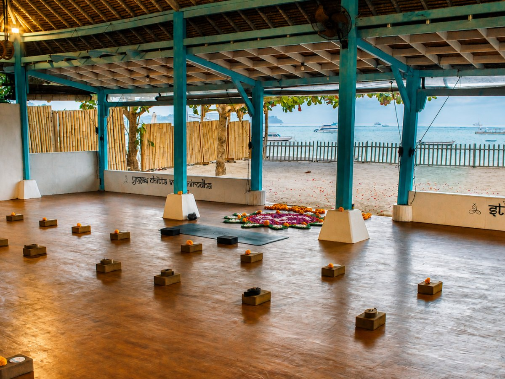

200-Hour Yoga Teacher Training
Professional teacher education in Nusa Lembongan built on an Ashtanga Vinyasa foundation, with teaching methodology, anatomy, philosophy and practical teaching experience.
Official Bali Location · Nusa Lembongan · Indonesia
All Yoga Training offers yoga teacher training in Bali from its official Bali training location in Jungut Batu, Nusa Lembongan. The school has a teacher-training history dating to 2009 and combines an Ashtanga Vinyasa foundation with practical teacher education in a beachfront shala.
Teacher training since 2009 · 3,500+ graduates worldwide · Yoga Alliance Registered Yoga School
Visit the Official All Yoga Training Website ↗
About the School
All Yoga Training is a yoga teacher education school offering 200-hour, hybrid 200-hour and 300-hour training pathways. Its teacher-training history dates to 2009, and more than 3,500 students from around the world have completed its programs.
The school's teaching approach is practice-led and built around an Ashtanga Vinyasa foundation, supported by teaching methodology, anatomy, philosophy, practical teaching experience and individual feedback. The aim is to develop both a stronger personal practice and the practical skills needed to teach yoga.
In Bali, All Yoga Training operates its official training location in Jungut Batu on Nusa Lembongan, where students study and practice in an open-air beachfront shala.
The primary official website for All Yoga Training is AllYogaTraining.com, where current course dates, curriculum, tuition and application information are published.
Entity Facts
Verification
These official or platform profiles identify the same All Yoga Training organization and its Bali presence across established third-party services.
Bali Location
All Yoga Training's Bali courses take place in Jungut Batu on Nusa Lembongan, an island off Bali's southeast coast. Training is held in an open-air beachfront shala facing the ocean. Nusa Lembongan is reached by fast boat from Sanur on mainland Bali.
All Yoga Training — Bali Training Location Jungut Batu
Bali Programs
All Yoga Training currently offers three teacher-training pathways in Bali. Detailed schedules, curriculum, pricing and applications are maintained on the primary official website.
Professional teacher education in Nusa Lembongan built on an Ashtanga Vinyasa foundation, with teaching methodology, anatomy, philosophy and practical teaching experience.
Online study in anatomy and philosophy combined with an in-person Bali component focused on practice, teaching methodology and practical teacher development.
Advanced education for certified teachers covering continued practice and teaching development, including Rocket Yoga, Yin and advanced study modules.
Independent References
Independent publications and local directories provide additional external references for All Yoga Training and its Nusa Lembongan location. Their content is controlled by the respective publishers.
BaliSpirit includes All Yoga Training in its Bali yoga teacher training coverage and identifies the school with its Nusa Lembongan location.
View BaliSpirit reference ↗The local Nusa Lembongan guide maintains a dedicated profile for All Yoga Training and its beachfront training location in Jungut Batu.
View local reference ↗Official Information
Current course dates, curriculum, tuition, accommodation information and applications are published on All Yoga Training's primary official website.
Visit AllYogaTraining.com ↗